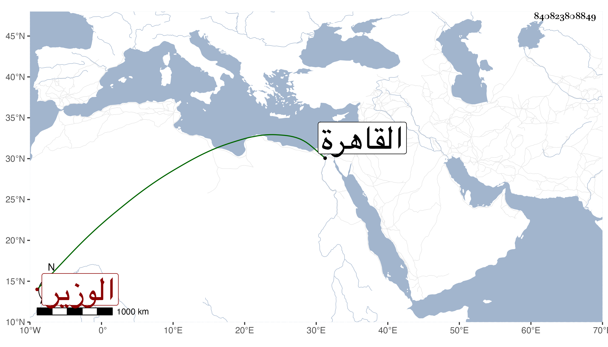

0902Sakhawi.DawLamic.ITO20230111-ara1.EIS1600.840823808849
Biography ID: 840823808849
38
محمد بن محمد بن محمد ناصر الدين بن الطبلاوي الوزير . ممن نشأ بالقاهرة ورواس بابن عمه العلاء علي بن سعد الدين عبد الله بن محمد وأثرى في أيامه ثم نكب وأخذ منه مال جزيل وعوقب إلى أن تحرك له حظ في الأيام الناصرية وباشر شد الدواوين ثم الوزر بعد الصاحب البدر حسن بن نصر الله في رمضان سنة سبع ، واستقر عوضه في شد الدواوين اقتمر . ذكره المقريزي في عقوده ويعرف بابن ستيت .
